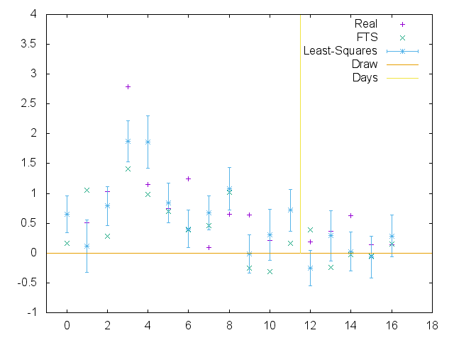
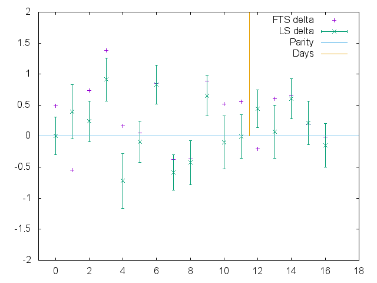
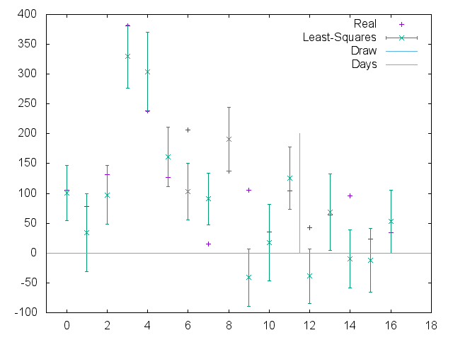

Roller Derby Analytics: Comparing performance with FTS on the WFTDA D1 Playoffs
In previous analytics posts, we've discussed the potential for least-squares ("Massey") methods as a mechanism for predicting Roller Derby team scores, and used a primitive version to analyse the performance of the Women's and Men's World Cups. At the time, we mentioned that a significant issue for least-squares fits is that, by default, they treat all data equally - there's no sense in which an older result is "superseded" by newer results automatically.
Subsequently, we also posted some results on determining the connectivity of Roller Derby, showing that nowadays there is one dominant group of Derby teams, internationally, who have all played at least one other member of the group in the last year. This work also allows us to measure how rapidly this group grows over time (starting from a given date, how long does it take for the majority of teams to have played sufficient games that all of them are connected in this way). Given the time-dependance issues of Least-squares methods, we use this data to sample only enough bouts to capture the largest group (this turns out to require between 7 and 9 months worth of bouts at any point in time).
Optimisation
There are two potential improvements to our least-squares algorithm over the "vanilla" default version. Firstly, we can attempt to compensate for home advantage by adjusting the scores for the home team by a small amount relative to reality (removing their theoretical advantage). Secondly, we can attempt to provide some "time awareness" by weighting old results relative to newer ones, so the influence of any given bout reduces over time. The difficulty is determining the precise values for these two corrections.
Using the Flat Track Stats datasets, we ran searches across the potential values for the two corrections (using 7 months of bout data to produce predictions, and then testing them against the subsequent month, for each value). There's quite a flat region of good performance for both, but we determined that a home advantage correction of around 0.1 to 0.15, and an exponentially-decaying weight with time-base on the order of 3 months gave the best results.
Results
In order to test our model, what better subject than the WFTDA Division 1 Playoffs, which are increasingly international with each year. We generated predictions for both score-ratios and score-differences for each of the bouts in the WFTDA Division 1 Playoffs 2 (held 11-13 Sept 2015), using both unoptimised and weighted-optimised versions of our Least-Squares model.
When calculating the expected score ratios, we can compare directly against the performance of Flat Track Stats (which publishes expected score ratios for all bouts). The FTS predictions were taken from the site on the 11th and 12th of September, so FTS predictions for the second day of the Playoffs included data from the first day.
(Our model was run on the dataset ending on the 8th September for all predictions, using bouts from 1 Jan 2015 through to that date (approximately 9 months).)
We can plot the resulting predictions, along with the actual score ratios (using a logarithmic scale) here:
 Plot of FTS, Least-squares (optimised) and Real log score ratios for WFTDA Division 1 Playoffs 2.
In general, our model does at least as well as Flat Track Stats does at predicting score ratios - we both fail at the Crime City v Rose bout by some margin, but also have many close matches to our predictions in other situations. This is perhaps easier to see by plotting the difference between the real score ratio and the predictions, for FTS and our model:
 Plot of absolute prediction errors for FTS, Least-squares (optimised) for log score ratios, WFTDA Division 1 Playoffs 2.
We can measure our overall performance by computing the Mean and RMS error - the Mean error gives a measure of our systematic bias (if as many of our guesses are high as low then they cancel out), while the RMS error gives a value for generally how bad our guesses were in general.
For Division 1 Playoffs 2, both our Mean and RMS errors are smaller than those of FTS (-0.135 v -0.330 for Mean error - showing that we both slightly underestimate on average; 0.476 v 0.607 for RMS error). In both cases, the dominant contributor to the error is the Crime City bout, although we still outperform FTS even if that particular bout is removed. (In fact, even without optimisation, standard Least-Squares outperforms FTS on these metrics.)
Surprisingly, if we try to predict on the basis of Score difference, rather than Score Ratios, we do considerably better in precisely the extreme cases that cause ratio methods problems. (Here, we can't compare against FTS, as they do not publish score difference predictions.)
 Plot of Least-squared (optimised) prediction and Real score difference results, WFTDA Division 1 Playoffs 2
Interestingly, although the Score difference prediction does better than we expected, it does fail to predict the winner as often as the Score ratio prediction: Score-diff calls 4 bouts wrongly, while ratios call 3 (and FTS 5), although there is considerable overlap across the bouts each find problematic.
Conclusion
We have established an optimised Least-Squares predictor for Roller Derby bouts, and tested it on WFTDA Division 1 Playoffs 2 bouts. We appear to be at least as successful as the more technologically sophisticated Flat Track Stats algorithm at predicting score ratios (potentially because ELO ranking metrics find sparse competitor graphs more difficult to handle), although neither algorithm has what we would regard as a superlative degree of predictive ability.
In our next article, we will publish some predictions for WFTDA Division 1 Playoffs 3, featuring London Rollergirls and Glasgow Roller Derby.
(In future, we hope to explore some other sport ranking algorithms, notably the pi-rating used as the basis of Constantinou's pi-football prediction system. Like soccer, Roller Derby has highly volatile bout performance, so we hope that pi-rating will be able to improve on both of the systems in this article.)
Acknowledgements
This analysis was performed using the September 8 dump of the Flat Track Stats bouts and teams databases. This data is released under a Creative Commons 4.0 Non-Commercial license. In the spirit of this license, which permits all uses which are not-for-profit, this article and the data in it are also released under a Creative Commons 4.0 Non-Commercial Share-Alike license - this means that you may use this article in any way which is not-for-profit, as long as you license your derived work in the same way.

{kind=link}
{kind=link}
{kind=link}